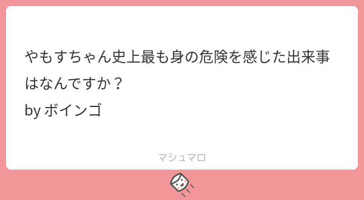

29: Kashiwa is no longer a sad place, Lalaport and everything
Starring


Show notes
目次
0:00 部品さんが交番に出頭した件
1:47 やもすさんの紹介
- 東京大学 物性研究所 国際超強磁場科学研究施設
- @takatronics
- Twitter bot 夜話 → Ep. 12
8:01 リーディング大学院
- 有機超伝導体とは - コトバンク
- 強磁場研究施設 - NIMS
- Dresden High Magnetic Field Laboratory - Wikipedia
- National High Magnetic Field Laboratory - Wikipedia
- 博士課程教育リーディングプログラム｜日本学術振興会
- グローバルCOEプログラム - Wikipedia
- 最近始まった博士課程支援策
29:42 強磁場実験
- パルス強磁場
- 破壊型と非破壊型
昨日、他の実験サイトで磁石が大爆発し、全く同じ仕様で同じくらい使用回数がだった磁石を使ってたわい冷汗。
この磁石での強磁場発生が制限されて、実験をどうするか悩んでる。 pic.twitter.com/7yFnaRywgF— やもす (@ShIma_Megagauss) August 5, 2021
78.7 Tの磁場発生後に爆発。 pic.twitter.com/6yKtoZU6N3
— やもす (@ShIma_Megagauss) August 25, 2021
今日の爆発。
85 Tの壁は厚いんやね… pic.twitter.com/IdWtcKZqiH— やもす (@ShIma_Megagauss) October 8, 2021
- 線材とは - コトバンク
- 強磁場施設の紹介と強磁場科学 (PDF)
- 世界の強磁場施設はロスアラモス、ドレスデン、トゥールーズ、武漢、東京 (柏)、大阪 (豊中)
- 昇華とは - コトバンク
46:21 Twitter アウトリーチ、柏キャンパス
研究室のOBが"Kashiwa is a sad place" "Lalaport, and nothing"などの名言を吐き捨てて帰っていった(かっこいい)
— Kuphony (@Kuphony) November 4, 2016
柏は本当にどんどん発展している。"Kashiwa is a sad place, lalaport and nothing."という文言は有名だが、それもひと昔前の話である。
— 福永 津嵩 (@fukunagaTsu) June 7, 2020
58:17 質問コーナー
- やったったぜという論文は？
- 2021年10月の気になった論文（完全版）
この中からどれがやもすちゃんの論文か当ててみよう！
- 2021年10月の気になった論文（完全版）
- いつから美少女になった？ 美少女になって得したこと、損したこと

やもすちゃん史上最も身の危険を感じた出来事はなんですか？ by ボインゴ
1:15:17 ノーベル賞、十倉兄弟、飲油
ノーベル物理学賞、近藤先生受賞に備えて作っていたクソコラです、成仏させます。 pic.twitter.com/jICnzcjyFk
— 部品（池田エライザ） (@tjmlab) October 5, 2021
- 十倉雅和 - Wikipedia
- 住友化学の十倉社長、「聞き上手」な戦略家: 日本経済新聞
「人間交差点」（弘兼憲史作）など社会派作品を好むが、最近は格闘描写が激しい「グラップラー刃牙」シリーズ（板垣恵介作）の新作「刃牙道」を愛読。
1:32:33 ゲーム
1:43:18 オフ会と Twitter スペース
今年のノーベル生理学･医学賞をタイムリーに予言していた人がいた！
TRPV1 アゴニストであるカプサイシンは脂溶性であり、油で拭いて取り除けばデリケートなエリアの刺激が緩和されることになる。実測 log P: 3.81 (ref: https://t.co/T9kFLJ1TD8)#NobelPrize #NobelPrize2021 https://t.co/0yJD3d47Ki— 叢雲くすり(創薬ちゃん) (@souyakuchan) October 4, 2021
お知らせ
先日Twitterで連絡を取って下さったB3の方が研究室見学に来てくれました！！！
東大物性研強磁場グループに興味がある方はメールでもDMでもいいのでいつでもご連絡下さい！！！— やもす (@ShIma_Megagauss) September 30, 2021
- 出演して頂ける方や感想などをお待ちしております。 #interaxion
おたよりコーナーを作りました。質問、感想、要望などお待ちしております。https://t.co/rz0mlRKZU3
— Interaxion Podcast (@interaxion) January 12, 2021